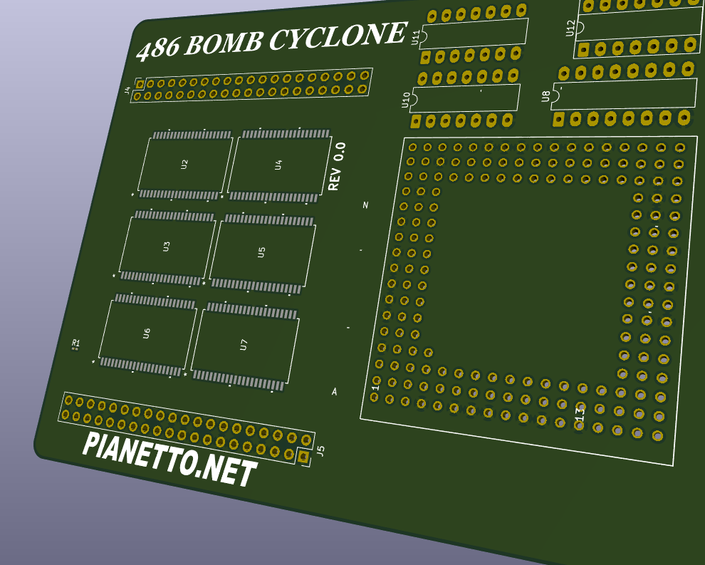

About Me

I've been repairing vintage computers and video game consoles since I was in middle school. I caught the bug for computer hardware back then, and now I'm about to graduate as a Computer Engineer. I remember my first vintage computer was an IBM PCjr upgraded with a rare 286 accelerator that someone had hacked in (yes, in an IBM PCjr). I sadly sold it way back then, and wish I had kept it becuase it was such an odd computer. Maybe a 286 accelerator would be a fun project to take on once I graduate and have more free time.

I really really like accelerator and interposer modules - any sort of upgradability for any computer or obselete part is something I enjoy learning and designing. Back in the 80's and 90's it was common to be able to purchase acclerators for aging platforms. Examples being the "Intel InBoard" ISA cards that could upgrade your IBM PC's 8088 to a 386. A bit impractical given your bottlenecked data/address bus, but super cool to see games like Doom or Wolf3D running on what was at the time a 15 year old computer (and the first computer to define the x86 PC standard). One of these days I'll try to design an accelerator for one of my 8088 machines, pictured above is one project I have been working on, on and off, and is designed to drop into an IBM PC XT and replace the 8088 with a 66MHz 486DX 2. I am calling it the 486 Bomb Cyclone 'cause it's fast, and the name sounds cool (it's also a real clasification for storms that expereince a phenomenom called "bombogenesis"). This project is far from finished, but once it is completed I will be making a new post in my embedded section, then making a seperate post in my vintage computer section for the demos and testing. My end goal is to get Doom3D running at 30fps, I may need to overclock the 486 to achieve this.
I also play guitar and cello in my free time. I may look into building a guitar FX pedal maybe this summer, something simple like a distortion pedal, nothing fancy. I think